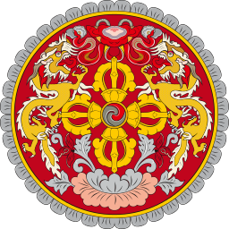

Bhutan vaakuna
perus informaatiota
Bhutan on pieni himalajan vuoristolla sijaitseva sisämaa valtio
Bhutan on ollut monarkia jo vuodesta 1907 saakka,
Mutta vuodesta 2008 Bhutanista tuli perustus laillinenmonarkia ja silloin järjestettiin ensimmäiset demokraattiset vaalit.
Bhutanin valtion nettisivut